袋田不動尊/福岡県
福岡県のうきは市にある袋田不動尊に素敵な不動明王がいると聞いて行ってみたよ。
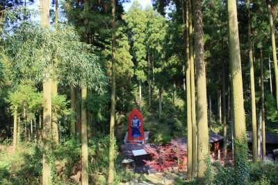
おおお、早速メインディッシュのお出ましかい！
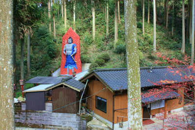
でもぉ〜、私ってぇ〜、好きなものはぁ〜、最後までとっておく人じゃないですか〜。（←ムカー！な言い方)
てなわけで不動様は後でたっぷり堪能するとして他を見てみよう。
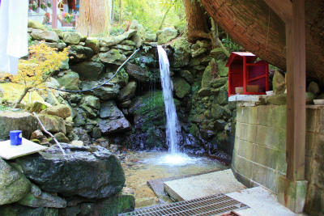 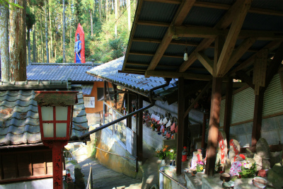
このお寺はいわゆる滝系霊場ですな。
同じ福岡県でいえば篠栗霊場で良く見られる不動明王＋滝行の山岳信仰系霊場。
小さな滝があり、その周辺には無数の石仏が並んでいる。
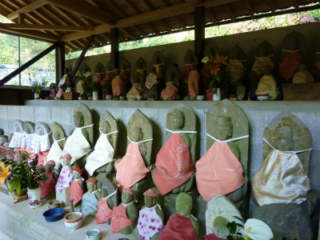
もちろん九州で不動明王といえばデフォルトでファイヤーパターンはペンキ塗り。マンガみたいな不動様だね、しかし。
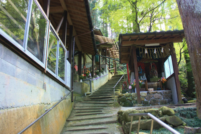 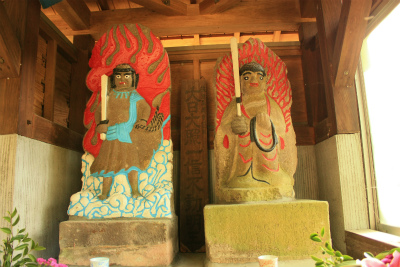
若干退色気味なれどカラフルな不動サマもあるよ。
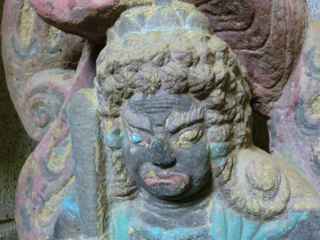
↓こっ、これは…ドクロベエ様？
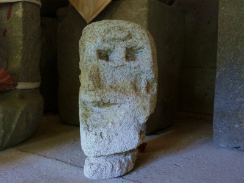
山のお堂のスウイッチ 不要の時は消す。スウォッチみたいですね。
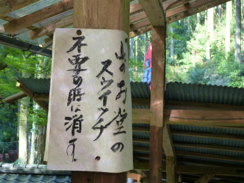
そうこうしている間にも地元のオバちゃん達が熱心に参拝していた。
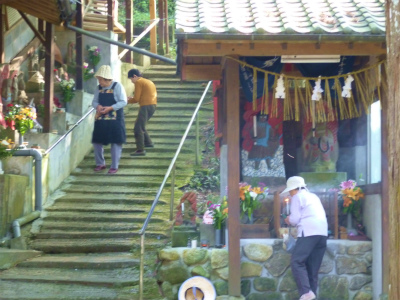
水出し放題。
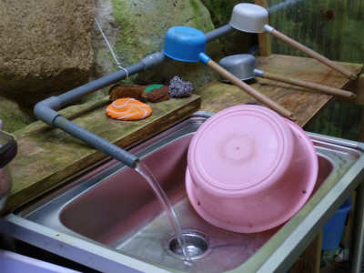
裏山には石が積まれ、石仏が並んでいた。何かをしたいのだろうが、この霊場がどこに向かっているのか、ベクトルが全然読めない。
つか方向性自体ないんだと思う。
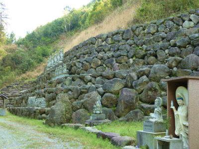
そういう行き当たりばったりな感じが凄く好きです。最初っからキッチリ計画した霊場なんて何の面白味もないもんねー。
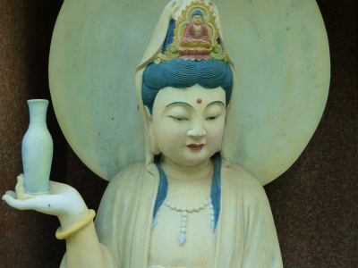
観音様だけが妙に色っぽかった。
てなわけで巨大不動尊である。
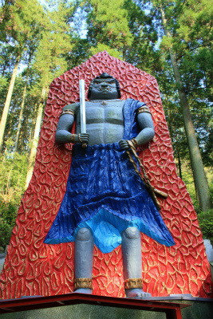
ファイアーパターン込みで１０メートルといったところだろうか。
炎がフレームからはみ出る事もなく、小さく納まった感じが独特の味わいを醸し出している。
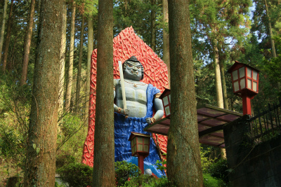 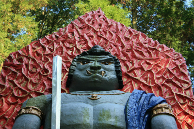
この弱っちそうな不動サマのお姿は如何なものだろう。
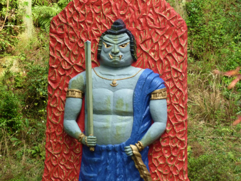
サイズも大型だし、もみ上げとか立派だし、持ち物も過不足ないのだが、いかんせん手が小さい！
手が小さい人は幸せになれないよー、って婆ちゃんが言ってたぞ。
そして顔が怒ってない。
不動明王といえば憤怒相がトレードマーク。もっと怒れ！怒るのだ！憤怒！憤怒！そして怒りの炎をメラメラメラっとお！
…と思ったけど、体育会系バッキバキの不動サマも少々食傷気味なので、たまにはこんな癒し系不動サマもいっか。
近寄ると迫力が増…さない。
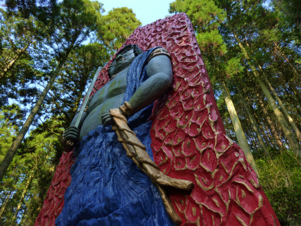
むしろ強調されるのはその薄さ。
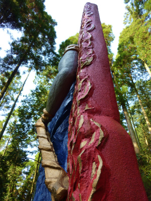 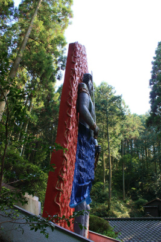
薄っ！
高さは10メートル程あるが厚みは１メートルあるかないか。
真横から見ると不動サマの威厳とか憤怒とかそっちのけで倒れないかどうか心配になってくる。
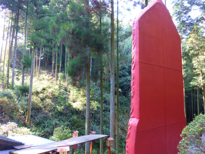
裏から見ると６分割してあるの丸わかりだし。
史上最薄の不動サマではなかろうか。
2010.04.
珍寺大道場 HOME